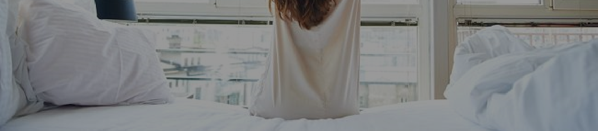

Ketika masih kecil, mungkin Anda merasa sebal dan sering membantah jika disuruh tidur siang oleh orang tua. Tapi setelah dewasa, waktu tidur justru bisa menjadi momen berharga dan paling dinanti-nanti. Dan ternyata, tidur tidak hanya mampu menghilangkan rasa kantuk, tapi juga sangat baik untuk kesehatan jiwa dan raga.
Berikut ini manfaat yang dari tidur
- Tubuh lebih sehat
- Istirahat dan tidur berperan penting dalam menjaga kesehatan tubuh kita. Jam tidur yang kurang diduga meningkatkan risiko penyakit ginjal, jantung, stroke, tekanan darah tinggi, detak jantung tidak teratur, hormon stres naik, dan diabetes. Tahukah Anda jika istirahat dan tidur yang cukup bisa memengaruhi reaksi tubuh terhadap insulin, yaitu hormon yang mengontrol tingkat glukosa atau gula darah? Kurang tidur membuat kadar gula darah kita lebih tinggi dari batas normal. Akibatnya, kita pun lebih rentan terserang diabetes.
- Pertumbuhan badan
- Istirahat dan tidur juga membantu pertumbuhan dan perkembangan tubuh yang sehat. Tidur yang nyenyak memicu tubuh melepaskan hormon yang mendukung pertumbuhan normal pada anak-anak dan remaja. Hormon tersebut juga membantu memperbaiki sel-sel dan jaringan, serta meningkatkan massa otot pada anak-anak, remaja, dan orang dewasa. Selain itu, istirahat dan tidur juga memegang peranan dalam pubertas dan kesuburan.
- Menjaga berat badan
- Tahukah Anda jika kurang tidur ternyata juga bisa meningkatkan risiko obesitas pada remaja dan kelompok usia lainnya? Tidur memengaruhi tubuh dalam memroses dan menyimpan karbohidrat. Caranya dengan menjaga hormon yang membuat kita merasa lapar (ghrelin) atau kenyang (leptin) tetap seimbang. Jika kita tidak cukup tidur, hormon ghrelin akan naik sedangkan hormon leptin akan turun. Akibatnya, kita pun akan merasa kelaparan. Itulah alasannya cukup tidur bisa menjadi salah satu cara melangsingkan tubuh yang alami.
- Tetap aktif di siang hari
- Istirahat dan tidur yang cukup dan berkualitas membuat kita tetap aktif sepanjang hari. Kurang tidur hanya satu atau dua jam per malam saja sudah membuat tubuh kita seolah-olah tidak tidur sama sekali selama satu atau dua hari. Orang yang kekurangan tidur cenderung menjadi kurang produktif di sekolah atau tempat kerja. Mereka membutuhkan waktu lebih lama untuk menyelesaikan tugas, bereaksi lebih lambat alias ‘lemot’, dan membuat lebih banyak kesalahan.
- Kehidupan seks terjamin
- Menurut seorang profesor psikologi, lelah akibat kurang istirahat dan tidur meningkatkan risiko kita mengalami berbagai cedera, atau kecelakaan rumah tangga. Misalnya teriris pisau, jatuh dari tangga, kecelakaan kendaraan (baik darat, laut, maupun udara). Bahkan dapat menyebabkan kecelakaan tragis dalam skala yang lebih besar seperti kebocoran reaktor nuklir, kecelakaan penerbangan, kecelakaan kerja, dan lain sebagainya.
- Meningkatkan suasana hati
- Kurang istirahat dan tidur dapat membuat kita menjadi cepat marah, tidak sabar, sulit berkonsentrasi, murung, stres, dan depresi. Terlalu sedikit tidur juga dapat membuat kita terlalu lelah melakukan hal-hal yang diinginkan.
- Memperkuat sistem kekebalan tubuh
- Menurut penelitian terhadap 150 orang, tidur tujuh jam atau kurang dari tujuh jam dalam sehari diduga membuat tubuh kita lebih rentan terserang sakit.
- Mempertajam ingatan
-
Kurang istirahat dan tidur diduga bisa membuat kita cepat pikun. Salah satu penelitian
menunjukkan bahwa ketika tidur, otak kita memroses, memperkuat, dan menggabungkan ingatan kita
dari sepanjang hari. Jika kurang tidur, ingatan-ingatan tersebut tidak bisa disimpan dengan
benar dalam otak dan bisa hilang.
- Agar berbagai manfaat istirahat dan tidur di atas bisa kita dapatkan secara maksimal, jangan lupa untuk tidur sesuai jumlah jam yang dianjurkan. Untuk orang dewasa disarankan untuk tidur sebanyak 7-9 jam sehari, remaja 14-17 tahun 8-10 jam/hari, anak usia 6-13 tahun 9-11 jam/hari, dan balita usia 3-5 tahun 10-13 jam/hari.
- Selain itu, biarkanlah anak usia 2 tahun tidur malam 11-12 jam dengan tambahan tidur siang 1-2 jam, bayi 12 bulan tidur malam 10 jam disertai tidur siang 4 jam, dan bayi yang baru